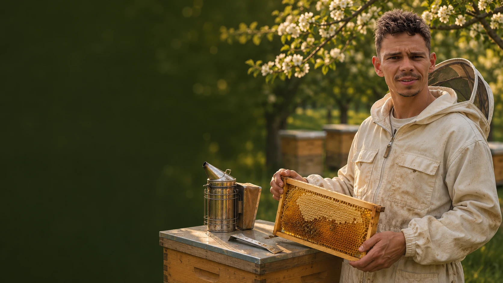
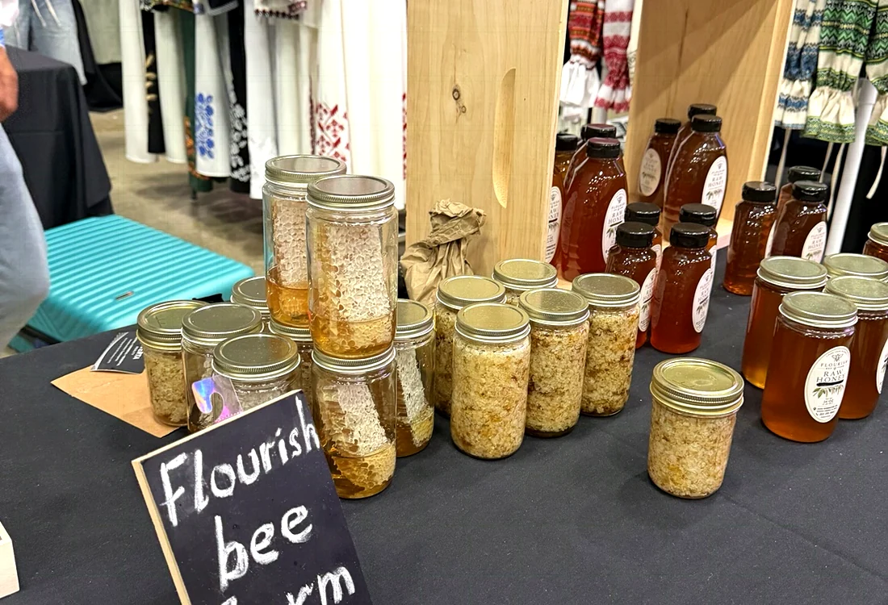

A STORY OF ROOTS & BLOOMS
A little bit of Ukraine.
A whole lot of heart.
A beekeeper’s heritage. A family making a home in the Carolinas. A love for the remarkable little world inside every hive.
MEET FLOURISH
Made by people.
Made with care.
Flourish Bee Farm brings together a Ukrainian beekeeper’s knowledge, Carolina landscapes and a family story worth sharing.
We want customers to feel that connection: to see the person behind the jar, learn about seasonal honey and find something special among the hive’s many creations.
This draft is based on the owner details shared with Brand Axis. The beekeeper's full biography, photographs and production practices will be added with his approval.
Discover what makes us Flourish ↗
BEHIND THE MARKET TABLE
Already made.
Ready to share.
Our collection comes from products already presented to customers at events—honey, honeycomb, candles and more. The next step is helping people shop beyond the market table.
Shop the collection ↗